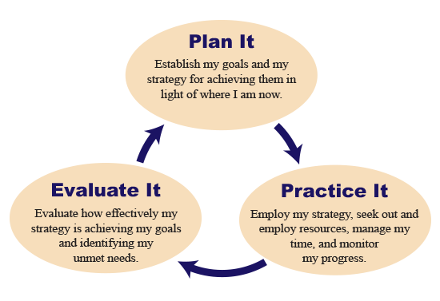

Using Feedback with Formative Assessments
Copyright © 2014 by Albert Oosterhof. All rights reserved.
Using Feedback with Formative Assessments
Learning relies on receiving feedback. You would never learn how to turn on an iPad without some level of feedback, such as observing what happens when you push its buttons, sensing how long you have to hold down the power button, and seeing the image appear on the screen, indicating the iPad has been successfully turned on. Many aspects of using an iPad are so intuitive that self-generated feedback from experimentation adequately guides learning. This is not the case with most skills learned in school. Because of its complexity, effective learning of academic skills requires different types of feedback, including feedback teachers provide students and feedback students provide each other, in addition to the feedback students obtain on their own.
Feedback is part of the package deal we associate with formative assessment. While formative assessments can significantly improve learning, they are meaningless unless students receive feedback. The most common type of teacher-to-student feedback is a teacher praising a student’s work. Although praising a student’s work is desirable, we will observe that this represents the least effective form of feedback with respect to improving learning.
Research indicates feedback involves complex interactions; however, some important patterns are emerging that will help structure our discussion. We will use the results of two fairly recent and important research reviews to describe these patterns. The first review, by Hattie and Timperley (2007), proposed a model to help describe how feedback works. The second review, by Shute (2008), established guidelines for providing feedback to students. We will first summarize the Hattie and Timperley model and then discuss several of Shute’s guidelines within the context of that model.
A Model of Feedback
Figure 1 provides a representation of the Hattie and Timperley (2007) model of feedback. As shown in the figure, the main purpose of feedback is to reduce discrepancies between desired goals and what students have presently achieved. Learning begins with setting goals, which should typically create discrepancies between what is to be achieved and students’ present knowledge and skills.
The second block within the model identifies basic ways students and teachers each reduce these discrepancies. Students can reduce the discrepancies by increasing their effort and employing more effective strategies. They can also use less productive means, such as lowering or abandoning goals, or blurring the goals so that the discrepancies between what is to be achieved and what has been learned are less obvious.
A teacher can prevent blurring or lowering of goals by making sure the goals are specific and appropriately challenging. This is one reason that having a carefully thought-out learning progression, which involves concise measurable goals, is so important. Once appropriate goals have been established, instruction and feedback become the teacher’s basic options for reducing the discrepancies established by the goals.
The third and largest block in Figure 1 pertains to how effective feedback enhances learning. Again, recall that the main purpose of feedback is to reduce discrepancies between desired goals and students’ present understandings and performance. In that regard, effective feedback references three questions that both the teacher and students should address:
- Where am I going?
- Where am I now?
- What do I do next?
Hattie and Timperley described how feedback to students addresses these three questions at four levels (see Figure 1). We will use the guidelines Shute (2008) developed from her research review to illustrate how feedback functions at these different levels.
Providing Feedback Related to How Well Tasks Are Performed
Assume that our students have been learning how to formulate a scientifically testable question. At the moment, they are learning how to select objectively measurable variables in their research questions. This is a relevant skill since research questions are more likely to be scientifically testable if the variables can be measured objectively.
For instance, a teacher might begin by stating:
Let us do some experiments to determine what causes an object to float or sink in water. Before we perform an experiment, we should identify a scientifically testable question that our experiment will try to answer. What would be a good question for us to answer through our experiment? Remember, the question must be scientifically testable.
A student might propose this question:
Do big objects sink or float in water?
Among some other issues, the variable this student implies—the “bigness of objects”— is not objectively measurable. An important consideration before we take this further pertains to whether this student has a sense of what makes variables objectively measurable and why this is relevant to formulating a scientifically testable question. At multiple times in the discussion of their model, Hattie and Timperley (2007) stated that if students lack necessary knowledge, then providing further instruction is more powerful than providing a student feedback information.
Stop for a moment. Why is providing further instruction more powerful than feedback if students lack necessary knowledge? Why does feedback, to be effective, depend on students having this necessary knowledge? At a given point in instruction, might feedback be more helpful for some students whereas further instruction would provide better results for other students?
With formative assessments, keep in the forefront whether feedback or further instruction is the better choice.
Because our present focus is on feedback, let us assume our student has a reasonable sense of what makes variables objectively measurable and recognizes the relevance of objective variables to creating a scientifically testable question. The first of the four levels in the Hattie and Timperley model is providing feedback related to how well a task was performed. Statements like, “That is incorrect” or “This question needs to be revised” are headed somewhat in that direction. However, we can do better. Let us use one of Shute’s feedback guidelines to help us here.
Feedback guideline: Reduce uncertainty between students’ performance and the goal. Recall that the three questions feedback must address are Where am I going?, Where am I now?, and What do I do next? Reducing students’ uncertainty with how they performed on the task and how that relates to the targeted goal are key to facilitating learning. Here is a better example of feedback to provide our student:
We need to improve this research question by being clear how an object’s “bigness” will be measured. We must change “bigness” to something that provides the same results when different people measure it. Our variable must be objectively measurable.
One might instead have used a series of shorter statements in conversation with a group of students to convey the essence of this feedback. Your professional judgment is obviously always in play and critical. Here is the key: providing feedback with respect to how the task was performed will improve learning if it concisely addresses our three important questions.
The three important questions feedback must address:
- Where am I going?
- Where am I now?
- What do I do next?
Research shows that feedback becomes particularly effective when it moves students beyond tasks on to the levels Hattie and Timperley referred to as feedback about the processing of the task and feedback about self-regulation. Shortly, we will look at those levels, but first let us look at feedback related to one’s self as a person. It turns out that this last level interacts with task-level feedback in interesting and, unfortunately, undesirable ways.
Providing Feedback Related to One’s Self as a Person
Providing feedback related to one’s self includes statements like, “You did well” and “You obviously worked hard.” This type of feedback typically conveys admiration but sometimes involves negative statements to express disapproval. Although widely used in the classroom, feedback to a student related to one’s self as a person does not address the three important questions presented in the feedback model, including Where am I now? And when combined with feedback related to the task, feedback related to one’s self actually reduces or annuls benefits to learning that occur when feedback related to performance of the task is provided by itself. The results of research are very clear on this point.
Here is what seems to be going on. From a student’s perspective, feedback is often extremely complex. The teacher is proficient and experienced with the task, but the student typically lacks both this proficiency and experience. A tremendous amount of cognitive processing has to occur in order for the student to successfully interpret feedback, especially when aspects of the teacher’s goal are still somewhat vague in the student’s mind. Providing feedback related to one’s self as a person distracts the student’s focus on the task.
Here are relevant guidelines that Shute (2008) provided based on her extensive review of research on feedback. After summarizing these guidelines, some brief exercises are presented to see how well you use the guidelines to detect problems within examples of feedback.
Feedback guideline: Use praise sparingly, if at all. This guideline may seem counterintuitive, and, as noted earlier, classroom observations indicate the use of praise is the most common type of teacher-to-student feedback. Praising a student can be beneficial, but not in the context of feedback used to facilitate learning. It is better to move the focus away from praise of the student and toward how the task was performed. Instead of “You did well,” more effective feedback would be something like, “Your example has qualities we want in a research question because the variable you used, ‘volume of an object,’ can be objectively measured.” While this is redundant, it is very important: Keep feedback focused on helping students answer, “Where am I going?, Where am I now?, and What do I do next?”
Feedback guideline: Focus feedback on the task, not the learner. This guideline, which is closely related to the preceding discussion, is elegant in its simplicity: Feedback should concentrate on characteristics of what the student did, not on characteristics of the student. Providing students encouragement and valuing their effort is, of course, important. Expressions of concern can also play a valuable role. To avoid negating benefits of feedback on how the task was performed, convey evaluations of student characteristics away from the context of formative assessment feedback.
Feedback guideline: Consciously avoid communicating your attitude towards a student, particularly with feedback given orally. The context in which feedback is given often affects whether feedback will be delivered orally or in writing. However, research indicates that orally delivered feedback more likely conveys a teacher’s attitudes toward students than when feedback is delivered as written comments by a teacher or computer. If attitude can be excluded from information conveyed in feedback, students are more likely to focus on task-specific information. Body language and voice inflections, which are a natural part of speaking, make it more difficult to achieve this focus. In this regard, written feedback is favored over oral feedback.
Feedback guideline: Do not give normative comparisons along with feedback. Comparing students to others during feedback is another way to inappropriately focus attention on the learner rather than the task. Again, providing feedback related to one’s self as a person diminishes the effectiveness of providing feedback related to how well the task was performed.
Feedback guideline: Avoid providing overall grades along with feedback. “Grades” refers to either numerical scores or letter grades written on students’ papers or conveyed orally. Teachers often write notes on students’ papers along with an overall grade. A teacher’s notes written to students typically are what we have been referring to as feedback related to how well tasks are performed, and can be very helpful. Including a grade with this feedback potentially is equivalent to adding feedback related to one’s self as a person, which diminishes benefits of feedback specific to a student’s performance on the task. Wiliam (2007) found out that this is exactly what happens. He summarized the results of research in which three conditions were compared: (a) when students only received comments, they showed significant gains; (b) when students received just grades, they predictably showed no learning gains; but (c) when students received both comments and a grade, they again showed no gains. Perhaps your experience is consistent with these research findings. When a paper is returned with a grade and some comments, the grade becomes the elephant in the room; it dominates attention and reduces the attentiveness given the comments. Specific feedback on students’ papers can be very helpful. To facilitate making the time you spend writing comments on student work worthwhile, find another way and time to provide their students scores or grades on their papers.
Providing Feedback Related to the Process Needed to Understand the Task
In the Hattie and Timperley (2007) model, the three questions of Where am I going?, Where am I now?, and What do I do next? are addressed at four levels (Figure 1). We initially looked at the task level, the first of the levels. Then, we jumped ahead to the self level, the last of the four levels, because of the significant negative interaction this level has on the task level. We now look at the second level, the process level of feedback.
Whereas the task level pertains to how well students performed a particular task, the process level concerns the underlying framework that provides meaning and coherence to tasks. Chi and Ohlsson (2005), in their discussion of declarative knowledge, described how one does not develop knowledge as a set of isolated units. Instead, learning involves organizing knowledge in some fashion. Process-level feedback involves linking a student’s performance to this underlying knowledge framework. This linking of knowledge is relevant to procedural knowledge and problem solving, as well as declarative knowledge.
Hattie and Timperley (2007) distinguished between task-level and process-level feedback. They stated that an example of task-level feedback is a teacher saying, “You need to include more about the Treaty of Versailles” (p. 90). In contrast, process-level feedback is focused on understanding the process used to complete the task. Examples of the process-level feedback that Hattie and Timperley provided are, “You need to edit this piece of writing by attending to the descriptors you have used so the reader is able to understand the nuances of your meaning” and “This page may make more sense if you use the strategies we talked about earlier” (p. 90).
Our earlier example involved students learning how to formulate a scientifically testable question. Students were asked to propose a good research question pertaining to what causes an object to float or sink in water. One research question offered by a student was, “Do big objects sink or float in water?” Feedback to this student at the task level might be:
Different people will not agree on when an object is “big.” Rewrite your research question using an objectively measurable variable.
In contrast, feedback at the process level might be:
If different people do not agree on when an object is “big,” it will be difficult for the researcher to measure “bigness” when collecting data. How can we modify this research question to address this problem?
Or alternately:
If different people do not agree on when an object is “big,” why would that cause a problem for our proposed research? To avoid this problem, what kinds of things should we try to do when writing our research question?
Process-level feedback appears to be better than task-level feedback for enhancing deeper learning. However, one level of feedback is not superior to the other in the sense that a particular level of feedback should be excluded. Students learn more effectively if feedback does not become fixed at one level. It is better to move among the task, process, and self-regulation levels, selecting the level of feedback that appears most appropriate at a particular moment for an individual student or group of students.
Earlier we looked at feedback guidelines Shute (2008) provided that are particularly relevant to self-level and task-level feedback. Let us look at some additional guidelines from her research that are relevant to process-level feedback.
Feedback guideline: Provide elaborated feedback to enhance learning. In contrast to simply conveying whether a student’s response is correct, elaboration provides cues to guide the student toward a correct answer. Elaboration seems to work better with a student who is struggling, whereas simply verifying the correctness of the response works better with a student who is readily learning the material (Hanna, 1976). However, in general, elaborated feedback facilitates learning more than just indicating whether a student’s response is right or wrong (Bangert-Drowns, Kulik, Kulik, & Morgan, 1991). When learning occurs readily, watch out for the learner disengaging from being provided too much elaboration.
With our earlier example where the student proposed the research question, “Do big objects sink or float in water,” elaboration might include a statement like this:
We might consider elephants as big and mice as small, although looking at a baby elephant, we might consider that elephant to be small even though it is much bigger than any mouse. How can we change your research question so that “big” is replaced with something that will be objectively measured?
Elaboration generally focuses on the underlying process associated with the task, but may take on a variety of forms. For instance, it might pertain to why an incorrect answer is wrong or a correct answer is right. It might address a student’s misconception or provide hints on how to proceed toward a better answer. Elaboration conceivably can involve reteaching relevant material, at which point it is more like instruction than feedback.
Elaboration within feedback functions much like scaffolding does within instruction. Discussions of instructional scaffolding often draw analogies to scaffolding used when constructing a building. As with construction, scaffolding, in a learning environment, is gradually added, then modified, and eventually removed based on the needs of a learner. Instructional scaffolding pertains to temporary supports that expedite learning but do not get in the way of students’ initiatives to build their own knowledge base. This involves an expert such as a teacher or advanced student assisting a novice, much like a skilled worker would assist an apprentice. The use of scaffolding within feedback, perhaps because of its functional similarity to providing elaborations, is particularly effective with lower-achieving learners. Lipscomb, Swanson, and West (2004) provided a more extensive discussion of instructional scaffolding. Their discussion is also available online.
Feedback guideline: Avoid using progressive hints that always terminate with the teacher providing the correct answer. The wrong way to provide progressive hints in feedback is for the teacher to use a series of very simple questions where the answer is always obvious to students. Effective feedback actively engages the student’s mind. For instance, if a student was struggling with calculating the hypotenuse of a right triangle, conceivably the teacher could go step by step to help the student obtain the correct answer. Where the sides of the right triangle are 12 and 5, the teacher might ask the student for the square of 12, then the square of 5, then to add together 122 and 52, and then state “The hypotenuse will be the square root of the resulting 169, what is it?” The teacher’s intent might have been for each of the hints to be elaborative, but collectively they are not helping the student discover the underlying relationship between the sides and hypotenuse of right triangles.
Feedback guideline: Provide feedback only after learners have attempted a solution. Some time ago, Kulhavy (1977) observed that a number of research studies had found feedback provided no benefit or even had detrimental effects on learning. Upon closer examination, he noticed that learning did improve when researchers provided feedback after students were provided an opportunity to resolve for themselves what had gone wrong. Taking advantage of more recent research, Bangert-Drowns et al. (1991) found that simply providing students the opportunity to attempt a solution was, by itself, insufficient. Equally important was the context in which students were provided that opportunity. For instance, if students found that material being learned was too simple, repetitive, or of little interest for other reasons, they would not engage with the feedback process. However, when interested in engaging, students benefited significantly from being provided the opportunity to attempt a solution prior to receiving feedback. Once again, monitoring students’ engagement is important with process-level feedback.
Providing Feedback Related to the Student’s Self-Regulation
A student’s ability to employ self-regulation of learning is not an academic skill, but a self-directed process that involves particular strategies, attitudes, and motivation. However, like academic skills, self-regulation is learned, and therefore benefits from the use of effective feedback. When employing self-regulated learning, a student is a proactive participant, the opposite of being a passive observer. Self-regulated learning is very efficient and effective, and therefore is highly desirable.
Barry Zimmerman is distinguished for his research related to self-regulated learning. The Learning and the Adolescent Mind website includes a very readable summary of his work and a description of the basic nature of self-regulated learning. Figure 2 is an adaptation of an illustration included within the website and shows the cyclical relationship among the three major phases of self-regulation—a student’s planning, practice, and evaluation during the learning process.
Because of its cyclical nature, self-regulation is continuous, with no particular starting or stopping point. A planning phase evolves from a preceding evaluation phase. The student uses the planning phase to establish specific goals addressing the questions, Where am I now? and Where am I going? From this information, the student addresses What do I do next? to formulate a strategy.
The practice phase is where the student employs the planned strategy. This occurs iteratively and often begins with the student seeking out and utilizing resources. The student monitors progress towards goals and the amount of time being spent to judge efficiency. The teacher’s formative assessments may play an important role within the practice phase. The iteration might continue with the student seeking out and using new resources, and continuing the self-monitoring.
The evaluation phase involves self-assessments and utilizing the assessments of others, including teachers. The assessments compare accomplishments to goals, again addressing the questions, Where am I going? and Where am I now? Evaluations always involve adding judgments of value to interpret what was observed. That is, the student’s perceived importance and desirability of what was observed influences the interpretation of what is observed. With the cyclical nature of self-regulated learning, the evaluation phase feeds into the subsequent planning stage where revised goals and strategies are established.
A form of self-regulated learning is visible in many young children, even infants. Many actions of young children are less subtle, making it often easy to observe their repeated planning, practice, and evaluation. Their intentions are sometimes mischievous, but usually purposeful, and the cyclical phases play out quite quickly. As with older students, the proactive learning of young children is facilitated (or discouraged) by those with whom the child interacts.
To facilitate self-regulation, feedback should include clear communication of goals, and of information that helps students formulate, employ, and evaluate strategies that will achieve the goals. Relying in part on students’ past accomplishments, feedback should facilitate development of self-efficacy and motivation. Focus should be on the task performed and the process needed to understand the task. Feedback should be responsive to students’ planning, practice, and evaluation of strategies they use to help achieve goals. An example of feedback at the self-regulation level that Hattie and Timperley (2007) provided is, “You already know the key features of the opening of an argument. Check to see whether you have incorporated them in your first paragraph” (p. 90).
In our earlier example, students were learning how to formulate a scientifically testable question. They were asked to propose a good research question pertaining to what causes an object to float or sink in water. A research question offered by one student was, “Do big objects sink or float in water?” Feedback aimed at the student’s self-regulation might be:
You know that a research question must use variables that can be objectively measured. Has that been accomplished? Modify your research question and tell me how you made it better.
It likely is obvious that both effective feedback and instruction in general are more about learning, less about teaching. This is particularly obvious with feedback aimed at the self-regulation level. A student likely does not become an effective self-regulated learner by being told how to apply the process. Modeling provided by the teacher can facilitate development of self-regulation. Successful learning experiences achieved through application of self-regulation help students recognize and further employ the process. Understanding the goals of present instruction and perceiving the importance of these goals help provide the motivation essential to engaging in self-regulation.
Summary
The purpose of feedback is to facilitate learning, specifically by reducing discrepancies between desired goals and what students have presently learned. Figure 1 provides a representation of a model proposed by Hattie and Timperley (2007) that describes how feedback works. The model points out that students can facilitate learning by employing effective learning strategies, but can degrade learning by abandoning, lowering, or blurring their goals. Teachers facilitate learning by providing appropriate challenging goals and by helping students reach these goals through effective learning strategies and feedback.
To provide effective feedback, the focus must always be on answering three questions: Where am I going?, Where am I now?, and What do I do next? Based on their extensive review of research, Hattie and Timperley proposed that feedback to students can be addressed at the four levels we have discussed: task, process, self-regulation, and self.
Feedback at the task level directly addresses student performance on the task specified by the goal, again by answering the set of three questions we have presented. Feedback at the process level addresses the same three questions, but with a focus on the underlying framework that provides meaning and coherence to the tasks. Unlike the task and process levels, the self-regulation level does not directly pertain to the development of an academic skill. It is concerned instead with a self-directed process that, when employed by students, significantly improves the effectiveness and efficiency of learning.
The fourth level of feedback, pertaining to a student’s qualities as a person, can convey a teacher’s positive or negative impression of the student. This level of feedback often takes the form of praising the student. Although widely used in the classroom, this level of feedback should be avoided. Research clearly shows that, when combined with feedback related to the task, feedback at the self level significantly reduces or annuls benefits to learning that are achieved by just providing feedback directly related to students’ performance of the task. Praise and criticism of students play useful functions, but should occur away from feedback directly associated with formative assessments.
References
- Bangert-Drowns, R. L., Kulik, C. C., Kulik, J. A., & Morgan, M. T. (1991). The instructional effect of feedback in test-like events. Review of Educational Research, 67, 213–238.
- Chi, M. T., & Ohlsson, S. (2005). Complex declarative learning. In K. J. Holyoak & R. G. Morrison (Eds.), Cambridge handbook of thinking and reasoning. (pp. 371–400). New York: Cambridge University Press. Also available online.
- Hanna, G. S. (1976). Effects of total and partial feedback in multiple-choice testing upon learning. Journal of Educational Research, 69(5), 202–205.
- Hattie, J., & Timperley, H. (2007). The power of feedback. Review of Educational Research, 77(1), 81–112.
- Kulhavy, R. W. (1977). Feedback in written instruction. Review of Educational Research, 47, 211–232.
- Lipscomb, L., Swanson, J., & West, A. (2004). Scaffolding. In M. Orey (Ed.), Emerging perspectives on learning, teaching, and technology. Retrieved November 22, 2013, from http://epltt.coe.uga.edu/index.php?title=Scaffolding
- Shute, V. J. (2008). Focus on formative feedback. Review of Educational Research, 78(1), 153–189. Also available online as an ETS Research Report.
- Wiliam, D. (2007). Keeping learning on track: Classroom assessment and the regulation of learning. In F. K. Lester Jr. (Ed.), Second handbook of mathematics teaching and learning (pp. 1053–1098). Greenwich, CT: Information Age Publishing.
Glossary
- Feedback:
- Feedback, in the context of a formative assessment, pertains to information conveyed with the intent of modifying a learner’s thinking or behavior with the purpose of improving learning. Our present focus is on feedback from the teacher to a student, although it can involve feedback from one student to another, or from a student to the teacher. Good feedback can significantly improve learning if delivered correctly.
- Model:
- In the sciences and economics, a model is a simplified representation of a system or phenomenon.
- Reduce uncertainty between students' performance and the goal.
- Use praise sparingly, if at all.
- Focus feedback on the task, not the learner.
- Avoid communicating feelings toward students when delivering feedback orally.
- Do not give normative comparisons when delivering feedback.
- Avoid providing overall grades along with feedback.
Table 1: The feedback guidelines that have been discussed presently.
Purpose of feedback
To reduce discrepancies between desired goals and students' present understandings and performance.
How do we reduce discrepancies?
Students can reduce these discrepancies by
- increasing effort and employing more effective strategies, relying in part on effective feedback.
- abandoning, lowering, or blurring their goals.
Teachers can reduce these discrepancies by
- providing appropriate, challenging specific goals.
- helping students reach their goals through effective learning strategies and feedback.
What is the value of effective feedback?
Effective feedback addresses three questions:
- Where am I going?
- Where am I now?
- What do I do next?
These questions are addressed at four levels:
- Task: Provides feedback related to how well a task was performed
- Process: Provides feedback related to the process needed to understand the task
- Self-regulation: Provides feedback related to the student's self-regulation
- Self: Provides feedback related to one's self as a person
This adaptation of the model of feedback proposed by Hattie and Timperley (2007) is divided into three blocks. The first block establishes that the main purpose of feedback is to reduce discrepancies between learning goals and students’ present knowledge and skills. The second block identifies the basic strategies students and teachers each have for reducing these discrepancies. The third and largest block presents the three questions that are relevant to addressing the discrepancies and, of particular importance, the four levels at which these questions are addressed.

The three basic phases of self-regulated learning are planning, practice, and evaluation. These phases are cyclical, each building on the previous and feeding into the next phase.